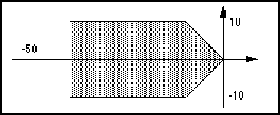

schematicIfFrameBorderTemplate ::= '(' 'schematicIfFrameBorderTemplate'
libraryObjectNameDef
schematicTemplateHeader
usableArea
{ annotate | commentGraphics | <conditionDisplay> | figure |
propertyDisplay | schematicComplexFigure }
')'
SchematicIfFrameBorderTemplate defines a template for the border of a schematicIfFrameImplementation.
(schematicIfFrameBorderTemplate
IF_FRAME_BORDER
(schematicTemplateHeader ...)
(usableArea (rectangle (pt 0 0) (pt 1000 1000)))
(figure GRAPHICS
(rectangle (pt 0 -100) (pt 1000 1000))
(path (pointList (pt 0 0) (pt 1000 0))))
...)
This example defines a rectangular border with a lower section outside the usable area for display of the if frame parameters.
schematicIfFrameBorderTemplateRef ::= '(' 'schematicIfFrameBorderTemplateRef'
libraryObjectNameRef
[ libraryRef ]
')'
SchematicIfFrameBorderTemplateRef references a schematicIfFrameBorderTemplate.
(schematicIfFrameBorder
(schematicIfFrameBorderTemplateRef
IF_FRAME_BORDER)
...)
schematicIfFrameBorderTemplate
schematicIfFrameImplementation ::= '(' 'schematicIfFrameImplementation'
implementationNameDef
ifFrameRef
schematicIfFrameImplementationHeader
schematicFrameImplementationDetails
')'
page schematicFrameImplementationDetails
Names and defines the graphical implementation of an ifFrame on a page. There must be at most one implementation for each ifFrame in a schematic view.
(schematicIfFrameImplementation ifF1
(ifFrameRef ifF1logic)
(schematicIfFrameImplementationHeader
(schematicIfFrameBorder
(schematicIfFrameBorderTemplateRef ...)
(transform ...)))
(schematicFrameImplementationDetails ...))
ifFrame schematicForFrameImplementation schematicOtherwiseFrameImplementation
schematicIfFrameImplementationHeader ::= '(' 'schematicIfFrameImplementationHeader'
{ <schematicIfFrameBorder> }
')'
schematicIfFrameImplementation
This construct gathers together information relating to the if frame implementation as a whole. See schematicIfFrameImplementation for an example of its use.
schematicImplementation ::= '(' 'schematicImplementation'
{ page | <totalPages> }
')'
SchematicImplementation contains the schematic pages that implement the connectivity.
(schematicImplementation
(totalPages 2)
(page &1 (pageHeader ...)
(schematicMasterPortImplementation MP1 ...)
(schematicNet NET1 ...)
(schematicNet NET2 ...)
...)
(page &2 ...))
This example shows a schematicMasterPortImplementation and two schematic nets defined in page &1.
schematicInstanceImplementation ::= '(' 'schematicInstanceImplementation'
implementationNameDef
instanceRef
schematicSymbolRef
transform
{ <cellNameDisplay> | cellPropertyDisplayOverride |
clusterPropertyDisplayOverride | <designatorDisplay> |
<implementationNameDisplay> | <instanceNameDisplay> |
<instanceNameGeneratorDisplay> | instancePortAttributeDisplay |
instancePropertyDisplay | <instanceWidthDisplay> | <nameInformation> |
pageCommentGraphics | parameterDisplay | propertyDisplayOverride |
propertyOverride | timingDisplay | <viewNameDisplay> }
')'
page schematicFrameImplementationDetails
SchematicInstanceImplementation is used to position an instance in a page and to modify the display positions of properties and attributes.
In this context, cellNameDisplay is used to display the name of the cell being instanced. InstanceNameDisplay is used to display the name of the instance referenced. ImplementationNameDisplay displays the implementationNameDef.
Within schematicInstanceImplementation, instancePortAttributeDisplay is used to specify the display positions for port attributes and properties.
Within the context of a view, there may be no more than one schematicInstanceImplementation for each instance.
(schematicInstanceImplementation &123 (instanceRef nand12) (schematicSymbolRef symbol) (transform (origin (pt 100 200))) (designatorDisplay ...) (instancePortAttributeDisplay SPI1 (portRef IN) ...) ...)
schematicInstanceImplementationRef ::= '(' 'schematicInstanceImplementationRef'
implementationNameRef
')'
schematicSymbolPortImplementationRef
SchematicInstanceImplementationRef references an implementation of an instance on a page.
(schematicSymbolPortImplementationRef IN (schematicInstanceImplementationRef INST1))
schematicInstanceImplementation
schematicInterconnectAttributeDisplay ::= '(' 'schematicInterconnectAttributeDisplay'
{ <connectivityTagGeneratorDisplay> | <criticalityDisplay> |
interconnectAttachedText | interconnectDelayDisplay |
<interconnectNameDisplay> | interconnectPropertyDisplay }
')'
schematicBus schematicBusSlice schematicNet schematicSubBus schematicSubNet
SchematicInterconnectAttributeDisplay gathers together all the attribute display constructs for interconnects. Interconnect attributes may be displayed at any level in the interconnect hierarchy of a bus, bus slice, subbus, net or subnet.
The value displayed will be the value for the interconnect which encloses schematicInterconnectAttributeDisplay, or if none is found there, higher up the hierarchy of interconnects.
(schematicBus BUS1 ...
(schematicInterconnectAttributeDisplay
(criticalityDisplay ...)
...) ...)
schematicInterconnectHeader ::= '(' 'schematicInterconnectHeader'
{ <criticality> | documentation | interconnectDelay | <nameInformation>
| property | schematicInterconnectTerminatorImplementation |
schematicJunctionImplementation | <schematicWireStyle> }
')'
schematicBus schematicBusSlice schematicNet
SchematicInterconnectHeader gathers together information relating to the schematic interconnect as a whole. It contains the definitions of all the junctions and terminators used within the interconnect.
(schematicInterconnectHeader (nameInformation (primaryName "BusA0")) (schematicWireStyle (wideWire)) ...)
interconnectHeader schematicSubInterconnectHeader
schematicInterconnectTerminatorImplementation ::= '('
'schematicInterconnectTerminatorImplementation'
implementationNameDef
schematicInterconnectTerminatorTemplateRef
transform
{ <implementationNameDisplay> | <nameInformation> |
propertyDisplayOverride | propertyOverride }
')'
SchematicInterconnectTerminatorImplementation represents the graphical implementation of a terminator on a schematic interconnect. This is sometimes referred to as a "dangling end".
(schematicInterconnectTerminatorImplementation
T1
(schematicInterconnectTerminatorTemplateRef
BUS_END)
(transform ...))
schematicJunctionImplementation
schematicInterconnectTerminatorImplementationRef ::= '('
'schematicInterconnectTerminatorImplementationRef'
implementationNameRef
')'
schematicBusJoined schematicNetJoined
SchematicInterconnectTerminatorImplementationRef references a schematicInterconnectTerminatorImplementation.
(schematicInterconnectTerminatorImplementationRef T1)
schematicInterconnectTerminatorImplementation
schematicInterconnectTerminatorTemplate ::= '('
'schematicInterconnectTerminatorTemplate'
libraryObjectNameDef
schematicTemplateHeader
hotspot
{ commentGraphics | figure | <implementationNameDisplay> |
propertyDisplay | schematicComplexFigure }
')'
SchematicInterconnectTerminatorTemplate defines a graphical template to be used to represent a floating end of a bus or net in a schematic drawing. It is permitted to have no graphics at all and so represent just a marker for the CAD system.
(schematicInterconnectTerminatorTemplate
BUS_END
(schematicTemplateHeader ...)
(hotspot (pt 0 0)
(schematicWireAffinity (wideWire))))
This example describes a template with no graphical representation.
schematicJunctionTemplate schematicInterconnectTerminatorImplementation
schematicInterconnectTerminatorTemplateRef ::= '('
'schematicInterconnectTerminatorTemplateRef'
libraryObjectNameRef
[ libraryRef ]
')'
schematicInterconnectTerminatorImplementation
SchematicInterconnectTerminatorTemplateRef references a schematicInterconnectTerminatorTemplate.
schematicInterconnectTerminatorTemplate
schematicJunctionImplementation ::= '(' 'schematicJunctionImplementation'
implementationNameDef
schematicJunctionTemplateRef
transform
{ <implementationNameDisplay> | <nameInformation> |
propertyDisplayOverride | propertyOverride }
')'
A schematicJunctionImplementation is used to join two subnets or subbusses belonging to the same schematicNet or schematicBus. It is also known as a solder dot or tie dot in schematics.
SchematicJunctionImplementation references a schematicJunctionTemplate, and may be referenced by a schematicNetJoined or schematicBusJoined. The template is placed graphically on the page using transform.
There must be at least two points within the interconnect that are coincident with each schematicJunctionImplementation.
(schematicJunctionImplementation I1 (schematicJunctionTemplateRef TIE) (transform (origin (pt 100 200))))
This example places the schematicJunctionImplementation with name I1 at (pt 100 200). I1 is an implementation of the schematicJunctionTemplate named TIE.
schematicJunctionImplementationRef ::= '(' 'schematicJunctionImplementationRef'
implementationNameRef
')'
schematicBusJoined schematicNetJoined
SchematicJunctionImplementationRef is used to reference a previously-defined schematicJunctionImplementation within the same schematic net, bus or bus slice.
It is used to associate a schematicJunctionImplementation with a schematicNet, schematicBus, schematicSubNet, etc.
(schematicJunctionImplementationRef I1)
schematicJunctionImplementation
schematicJunctionTemplate ::= '(' 'schematicJunctionTemplate'
libraryObjectNameDef
schematicTemplateHeader
hotspot
{ commentGraphics | figure | <implementationNameDisplay> |
propertyDisplay | schematicComplexFigure }
')'
SchematicJunctionTemplate provides a hotspot and graphics for use by a schematicJunctionImplementation. For schematics, the graphics will typically be either a simple circle to represent a tie dot, or nothing at all.
(schematicJunctionTemplate TIE (schematicTemplateHeader ...) (hotspot (pt 0 0)) (figure GRAPHICS (circle (pt -5 0) (pt 5 0))))
This example shows a simple representation of a tie dot for schematics as a circle, with a hotspot at the center.
schematicJunctionImplementation
schematicJunctionTemplateRef ::= '(' 'schematicJunctionTemplateRef'
libraryObjectNameRef
[ libraryRef ]
')'
schematicJunctionImplementation
SchematicJunctionTemplateRef is used to reference a schematicJunctionTemplate, which is held in a library.
(schematicJunctionTemplateRef TIE (libraryRef SYSTEM))
schematicJunctionTemplate library
schematicMasterPortImplementation ::= '(' 'schematicMasterPortImplementation'
implementationNameDef
schematicMasterPortTemplateRef
( portRef | localPortGroupRef )
transform
{ <implementationNameDisplay> | <nameInformation> |
<portAttributeDisplay> | propertyDisplayOverride | propertyOverride }
')'
page schematicFrameImplementationDetails
SchematicMasterPortImplementation references a schematicMasterPortTemplate and associates it with a master port or local port group. It provides an implementation of a schematicMasterPortTemplate that may be used in a page to connect a schematicNet or schematicBus to a master port or local port group. Transform is used to position the schematicMasterPortTemplate in the page.
If a schematicNetJoined references a schematicMasterPortImplementation, then the signalJoined of the signal that is associated with the schematicNet must also reference the master port, i.e. the portRef in the schematicMasterPortImplementation must match the portRef in the signalJoined. A similar rule applies when the schematicMasterPortImplementation references a local port group.
A schematicMasterPortImplementation may be referenced by no more than one schematicNet or schematicBus. The association between the schematicMasterPortImplementation and a schematicNet or schematicBus is made by the schematicNetJoined or schematicBusJoined.
It is possible to have a schematicMasterPortImplementation without any reference to it from any schematicNet or schematicBus. This would represent a 'floating' connector, which is yet to be connected.
PortAttributeDisplay is used to display the name and other attributes of the port which is referenced by the schematicMasterPortImplementation.
(cluster C1
(interface ... (port VCCA ...) ...)
(clusterHeader)
(schematicView view1
(schematicViewHeader ...)
(logicalConnectivity ...
(signal sigVCC
(signalJoined
(portRef VCCA) ... )))
(schematicImplementation
(page &1 ...
(schematicMasterPortImplementation I1
(schematicMasterPortTemplateRef ...)
(portRef VCCA)
(transform (origin (pt 100 200))))
(schematicNet VCC
(signalRef sigVCC)
(schematicInterconnectHeader ...)
(schematicNetJoined
(joinedAsSignal)
(schematicMasterPortImplementationRef
I1) ...) ...) ...) ...) ...))
In this example, a port VCCA is declared in the interface of the cluster. This port is referenced from signal sigVCC and from the schematicMasterPortImplementation I1. In the schematicNet VCC, the schematicMasterPortImplementation I1 is referenced, as is the signal sigVCC. These references are consistent with one another.
schematicGlobalPortImplementation schematicMasterPortImplementation
schematicMasterPortImplementationRef ::= '(' 'schematicMasterPortImplementationRef'
implementationNameRef
')'
schematicBusJoined schematicNetJoined
SchematicMasterPortImplementationRef is a reference to a schematicMasterPortImplementation. It is used to reference a schematicMasterPortImplementation from within a schematicNet or schematicBus to establish connectivity between a master port and the schematicNet or schematicBus.
(schematicMasterPortImplementationRef I1)
This example references a schematicMasterPortImplementation with implementation name I1.
schematicGlobalPortImplementationRef schematicMasterPortImplementation schematicOnPageConnectorImplementationRef schematicOffPageConnectorImplementationRef
schematicMasterPortTemplate ::= '(' 'schematicMasterPortTemplate'
libraryObjectNameDef
schematicTemplateHeader
hotspot
portDirectionIndicator
{ annotate | commentGraphics | figure | <implementationNameDisplay> |
<portAttributeDisplay> | propertyDisplay | schematicComplexFigure |
<schematicPortStyle> }
')'
SchematicMasterPortTemplate is a template definition for use in schematicMasterPortImplementations. It allows a graphical representation of a port to be defined. It occurs as a library object within a library.
Display slots may be defined to display the attributes of the master port with which the template is associated by the schematicMasterPortImplementation form.
(schematicMasterPortTemplate IN_PORT
(schematicTemplateHeader
(schematicUnits ...) ...)
(hotspot (pt 0 0))
(input)
(figure LINES
(polygon
(pointList (pt 0 0) (pt -10 10) (pt -40 10)
(pt -40 -10) (pt -10 -10) (pt 0 0)))))
This example shows a schematicMasterPortTemplate named IN_PORT with a hotspot at (pt 0 0) and some graphics to represent an input-port symbol, as shown below.

schematicMasterPortImplementation
schematicMasterPortTemplateRef ::= '(' 'schematicMasterPortTemplateRef'
libraryObjectNameRef
[ libraryRef ]
')'
schematicMasterPortImplementation
SchematicMasterPortTemplateRef is used to reference a schematicMasterPortTemplate.
(schematicMasterPortTemplateRef IN_PORT (libraryRef SYSTEM))
schematicMasterPortTemplate library
schematicMetric ::= '(' 'schematicMetric'
setDistance
( hotspotGrid | noHotspotGrid )
{ <nominalHotspotGrid> }
')'
schematicRequiredDefaults schematicUnits
SchematicMetric establishes scaling for schematics and schematics symbols. It may also declare a grid for hotspots.
(schematicMetric (setDistance (unitRef mm_10)) (hotspotGrid 50))
schematicNet ::= '(' 'schematicNet'
interconnectNameDef
signalRef
schematicInterconnectHeader
schematicNetJoined
{ comment | <schematicInterconnectAttributeDisplay> |
<schematicNetDetails> | userData }
')'
page schematicFrameImplementationDetails
A schematicNet is a structured representation of connectivity. Structural connectivity allows the ordering of ports to be described, and makes an association between signals, ports and the hotspots of objects that can be instantiated. Each schematicNet is associated with a single signal and with single-bit ports.
Each of the ports referenced in a schematicNet must also be referenced by the signal which corresponds with the schematicNet. A hotspot may be referenced by no more than one schematicNet.
SchematicNetDetails provides further details of the net, either in the form of a graphical representation, or as a set of subnets. The schematicSubNets within a schematicNet provide further information on the structure of the connectivity.
SchematicNetGraphics gives details of the graphical implementation of a net.
Two nets with different names on a page may reference the same signal. This means that the two nets are electrically connected.
There are a number of rules governing the graphics for a schematic interconnect. Interconnect in this context means schematicNet, schematicSubNet, schematicBus, schematicSubBus and schematicBusSlice:
1. The graphics may be described only by using path, either directly within figure or indirectly using complexGeometry or schematicComplexFigure. There may be more than one path.
2. Each path must end at a connection point (hotspot) or in space.
3. Two paths from the same or different nets or busses may cross each other where no connection is implied. Where such a crossover occurs, the point of intersection must not appear in the pointList of either path.
4. Segments from different paths should not lie on top of one another, either partially or completely.
5. Where a 'T' junction or crossover occurs between two paths in the same schematicNet or schematicBus, a schematicJunctionImplementation must be specified at the intersection point and both paths must include the coordinate of the schematicJunctionImplementation point in their pointList.
The above rules are intended to make the task of the EDIF reader easier, at some expense to the EDIF writer. See also the rules under hotspot.
(page &1 ...
(schematicNet NET1
(signalRef SIG1)
(schematicInterconnectHeader ...)
(schematicNetJoined
(portJoined
(portRef MP1)
(portInstanceRef P1 (instanceRef I1)))
(ripperHotspotRef ...)
...)
(schematicNetDetails
(schematicNetGraphics
(figure GRAPHICS
(path
(pointList
(pt 100 200)
(pt 300 200))))))
...)
..)
This example defines a schematicNet called NET1 which provides the structural connectivity and implementation for all or part of the signal SIG1. The schematicNet NET1 is implemented using a single line from (pt 100 200) to (pt 300 200).
hotspot schematicBus schematicNet signal
schematicNetDetails ::= '(' 'schematicNetDetails'
( schematicNetGraphics | schematicSubNetSet )
')'
SchematicNetDetails specifies the details of a schematic net or subnet either as graphics, using schematicNetGraphics, or as a further set of subnets using schematicSubNetSet.
schematicNetGraphics ::= '(' 'schematicNetGraphics'
{ comment | figure | schematicComplexFigure | userData }
')'
SchematicNetGraphics is used to describe the graphics of a schematicNet or schematicSubNet.
Refer to the rules governing schematicNet for details of how the graphics must be structured.
(schematicNet NET1
(signalRef SIG1)
(schematicInterconnectHeader ...)
(schematicNetJoined
(portJoined
(portRef MP1)
(portInstanceRef P1 (instanceRef I1)))
(ripperHotspotRef ...)
...)
(schematicNetDetails
(schematicNetGraphics
(figure GRAPHICS
(path
(pointList
(pt 100 200)
(pt 300 200))))))
...)
This example defines a schematicNet called NET1 which gives the structural connectivity and implementation for all or part of the signal SIG1. The schematicNet NET1 is implemented within schematicNetGraphics using a single line from (pt 100 200) to (pt 300 200).
schematicBusGraphics schematicNet
schematicNetJoined ::= '(' 'schematicNetJoined'
( portJoined | joinedAsSignal )
{ ripperHotspotRef | schematicGlobalPortImplementationRef |
schematicInterconnectTerminatorImplementationRef |
schematicJunctionImplementationRef |
schematicMasterPortImplementationRef |
schematicOffPageConnectorImplementationRef |
schematicOnPageConnectorImplementationRef |
schematicSymbolPortImplementationRef }
')'
SchematicNetJoined lists all the ports and hotspots that are connected to the schematicNet, or schematicSubNet. It is analogous to schematicBusJoined in schematicBus.
The items referenced in portJoined within schematicNetJoined must also be referenced in the corresponding signalJoined.
When used within schematicSubNet, the schematicNetJoined must be a subset of the schematicNetJoined of the immediately-enclosing schematicNet or schematicSubNet.
(schematicNetJoined
(portJoined
(portRef MP1)
(portInstanceRef P1 (instanceRef I1)))
(schematicJunctionImplementationRef J1)
...)
This schematicNetJoined indicates that the master port MP1, the schematicJunctionImplementation J1 and the instance port P1 are connected into this schematicNet.
schematicBusJoined signalJoined connectivityNetJoined
schematicOffPageConnectorImplementation ::= '('
'schematicOffPageConnectorImplementation'
implementationNameDef
schematicOffPageConnectorTemplateRef
transform
{ <associatedInterconnectNameDisplay> | <implementationNameDisplay>
| <nameInformation> | property | propertyDisplay |
propertyDisplayOverride | propertyOverride }
')'
page schematicFrameImplementationDetails
SchematicOffPageConnectorImplementation references a schematicOffPageConnectorTemplate, which is used to represent an off-page connector in a schematic. It may exist in isolation, or it may be associated with a schematicNet or schematicBus. This association is achieved by reference to the schematicOffPageConnectorImplementation from schematicNetJoined or schematicBusJoined.
A schematicOffPageConnectorImplementation may be referenced by no more than one schematicBus or schematicNet.
An off-page connector is intended to be used to represent the fact that a net or bus is continued elsewhere on the schematic on another page. There are no semantic rules governing its use, i.e. it is not illegal if the net or bus is not represented on another page.
Transform is used to position the instance of the schematicOffPageConnectorTemplate in a page.
InterconnectNameDisplay may be used to display the name of the schematicNet or schematicBus with which this schematicOffPageConnectorImplementation is associated.
(page &1 ...
(schematicOffPageConnectorImplementation I1
(schematicOffPageConnectorTemplateRef ... )
(transform (origin (pt 100 200))))
...
(schematicNet NET1 (signalRef SIG1)
(schematicInterconnectHeader ...)
(schematicNetJoined (portJoined ...)
(schematicOffPageConnectorImplementationRef
I1) ...) ...))
In this example, a schematicOffPageConnectorImplementation named I1 is referenced from the schematicNet NET1.
schematicOnPageConnectorImplementation
schematicOffPageConnectorImplementationRef ::= '('
'schematicOffPageConnectorImplementationRef'
implementationNameRef
')'
schematicBusJoined schematicNetJoined
SchematicOffPageConnectorImplementationRef is a reference to a schematicOffPageConnectorImplementation. It is used to reference a schematicOffPageConnectorImplementation from within a schematicNet or schematicBus to establish connectivity between a schematicOffPageConnectorImplementation and the schematicNet or schematicBus.
(schematicOffPageConnectorImplementationRef I1)
This example references a schematicOffPageConnectorImplementation with implementation name I1.
schematicOnPageConnectorImplementationRef schematicOffPageConnectorImplementation
schematicOffPageConnectorTemplate ::= '(' 'schematicOffPageConnectorTemplate'
libraryObjectNameDef
schematicTemplateHeader
hotspot
{ annotate | <associatedInterconnectNameDisplay> | commentGraphics |
figure | <implementationNameDisplay> | propertyDisplay |
schematicComplexFigure }
')'
SchematicOffPageConnectorTemplate provides a graphical template for a schematicOffPageConnectorImplementation. It has a single hotspot to which the graphics of a schematicNet or schematicBus may be connected.
(schematicOffPageConnectorTemplate OffPC
(schematicTemplateHeader
(schematicUnits ...) ...)
(hotspot (pt 0 0))
(figure LINES
(polygon
(pointList (pt 0 10) (pt 10 0) (pt 0 -10)))))
This example shows a schematicOffPageConnectorTemplate named OffPC with a hotspot at (pt 0 0) and some graphics to represent the symbol, as shown in the figure below.
schematicOffPageConnectorTemplateRef
schematicOffPageConnectorTemplateRef ::= '(' 'schematicOffPageConnectorTemplateRef'
libraryObjectNameRef
[ libraryRef ]
')'
schematicOffPageConnectorImplementation
SchematicOffPageConnectorTemplateRef is used to reference a schematicOffPageConnectorTemplate.
(schematicOffPageConnectorTemplateRef OffPC)
schematicOffPageConnectorTemplate
schematicOnPageConnectorImplementation ::= '('
'schematicOnPageConnectorImplementation'
implementationNameDef
schematicOnPageConnectorTemplateRef
transform
{ <associatedInterconnectNameDisplay> | <implementationNameDisplay>
| <nameInformation> | property | propertyDisplay |
propertyDisplayOverride | propertyOverride }
')'
page schematicFrameImplementationDetails
SchematicOnPageConnectorImplementation references a schematicOnPageConnectorTemplate which is used to represent an on-page connector in a schematic. It may exist in isolation, or it may be associated with a schematicNet or schematicBus. This association is achieved by reference to the schematicOnPageConnectorImplementation from schematicNetJoined or schematicBusJoined.
A schematicOnPageConnectorImplementation may be referenced by no more than one schematicBus or schematicNet.
An on-page connector is intended to be used to represent the fact that a net or bus is continued elsewhere on the schematic on the same page. There are no semantic rules governing its use, i.e. it is not illegal if the net or bus is not represented elsewhere on the page.
Transform is used to position the instance of the schematicOnPageConnectorTemplate in a page.
InterconnectNameDisplay may be used to display the name of the schematicNet or schematicBus with which this schematicOnPageConnectorImplementation is associated.
(page &1 ...
(schematicOnPageConnectorImplementation I1
(schematicOnPageConnectorTemplateRef ... )
(transform (origin (pt 100 200))))
...
(schematicNet NET1
(signalRef SIG1)
(schematicInterconnectHeader ...)
(schematicNetJoined
(joinedAsSignal)
(schematicOnPageConnectorImplementationRef
I1) ...) ...) ...)
In this example, a schematicOnPageConnectorImplementation named I1 is referenced from the schematicNetNET1.
schematicOffPageConnectorImplementation